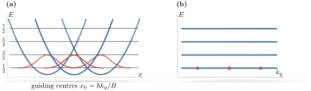
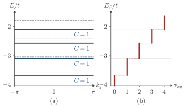

Advanced Quantum Materials 2027 · All lectures · Lecture notes
Session 4. Electrons in a Magnetic Field, Quantum Hall Effect and Landau Levels
4.3 From the Kubo formula to the Chern number, briefly
We derived this result in full in Section 3.5, so here we only recall the logic and check that it applies without changes. The Kubo formula is linear response, so it is first order in the applied field, and its sum over states has the form of a second-order perturbation expression. It writes the transverse conductivity as a sum over all pairs of occupied and empty bands, where each term has matrix elements of \(\partial H/\partial k_x\) and \(\partial H/\partial k_y\) divided by energy differences. There is an identity that relates \(\partial H/\partial k\) to the derivative of the eigenstates, which we obtain when we differentiate the eigenvalue equation \(H(\mathbf{k})|u_\mathbf{k}\rangle = \varepsilon(\mathbf{k})|u_\mathbf{k}\rangle\) with respect to \(\mathbf{k}\). With this identity every explicit energy denominator cancels, and the result depends only on the wavefunctions, through the Berry connection \(\mathbf{A}(\mathbf{k}) = i\langle u_\mathbf{k}|\nabla_\mathbf{k}|u_\mathbf{k}\rangle\) and its curl, the Berry curvature \(\Omega(\mathbf{k}) = \nabla_\mathbf{k}\times\mathbf{A}(\mathbf{k})\). The Brillouin zone is a closed, compact manifold, which is a torus, and when we sum over occupied bands and integrate over it we obtain an integer,
\[\sigma_{xy} = \frac{e^2}{h}\, C, \qquad C = \frac{1}{2\pi}\sum_{n\,\text{occ.}}\int_{\text{BZ}} \Omega_n(\mathbf{k})\, d^2k \in \mathbb{Z}, \tag{4.1}\]
which is the Chern number of the occupied bands. This is the same statement as (3.4). The Hall conductance is not only quantized, it is also a topological invariant, so it does not change under any smooth deformation of the Hamiltonian that does not close the bulk gap. What is new in this session is not this derivation. It is the band structure that we use, the Landau levels of a magnetic field. It is also everything that follows when we ask how the many-body ground state of a partially filled Landau level looks.
4.4 Landau levels as Chern-number-one flat bands
A two-dimensional electron gas in a perpendicular magnetic field develops a set of completely flat bands, which is the third type of dispersion of Section 2.10. These are the Landau levels, with index \(n=0,1,2,\dots\). In this context “flat” means without dispersion, so the energy does not depend on momentum at all, and we will derive the reason for this in Section 4.9. Even if they have no dispersion, each Landau level has a finite Chern number, which is also the smallest nonzero value, \(C=1\). If the chemical potential is between the \(N\)-th and the \((N+1)\)-th Landau level, the total Chern number of the occupied bands is the sum of \(N\) contributions equal to \(1\),
\[C_{\text{tot}} = \sum_{n=0}^{N-1} C_n = N \quad\Longrightarrow\quad \sigma_{xy} = N\,\frac{e^2}{h}, \tag{4.2}\]
which is an integer that counts the number of filled Landau levels. This is the integer quantum Hall effect. It is a state built only from flat bands without dispersion, and still its Hall conductance is an exact integer multiple of \(e^2/h\), with a sharp quantization.


Landau levels have no dispersion, so the group velocity of every state is zero. How can such a band have the Chern number \(C=1\)?
Show the answers
- A. ✗ False
This is false. The Chern number of (4.1) is computed from the bulk wavefunctions of a periodic system, with no edge at all. The edge states are a consequence, since their number equals \(C\).
- B. ✓ True
This is true. The energies cancel in (4.1), as we saw in Section 3.5. A flat band can still have wavefunctions that twist across the Brillouin zone, and this twist is counted by \(C\).
- C. ✗ False
This is false. If \(C\) were zero, a filled Landau level would give \(\sigma_{xy}=0\). The measured plateau of a filled lowest Landau level is \(e^2/h\), which needs \(C=1\).
The chemical potential is in the gap between the third and the fourth Landau level. What is \(\sigma_{xy}\)?
Show the answers
- A. ✗ False
This is false. The value \(e^2/h\) is the plateau with only the lowest Landau level filled. Three filled levels give three times this value.
- B. ✓ True
This is true. Three Landau levels are filled, each with \(C=1\). By (4.2) the total is \(C=3\), and \(\sigma_{xy}=3e^2/h\).
- C. ✗ False
This is false. The fourth level is above the chemical potential and it is empty, so it adds nothing. The plateau at \(4e^2/h\) needs the chemical potential in the gap above the fourth level.
Try it. Run the cell for the three fields. The dots of the bulk bands form horizontal lines, which means that the Landau levels have no dispersion. The lines move apart when you increase B, as expected from the growth of the cyclotron energy with the field.
- In Section 5.14 the Chern number of the BdG bands separates an s-wave from a chiral p-wave superconductor with the same gap.
- In Section 6.16 the same integral of the Berry curvature gives the Chern number (6.10) of a magnon band.
- In Section 7.1 a partially filled flat band with a Chern number, the fractional Chern insulator, is an example where mean-field theory fails.
- In Section 10.6 the Chern number separates phases that no local order parameter can separate.